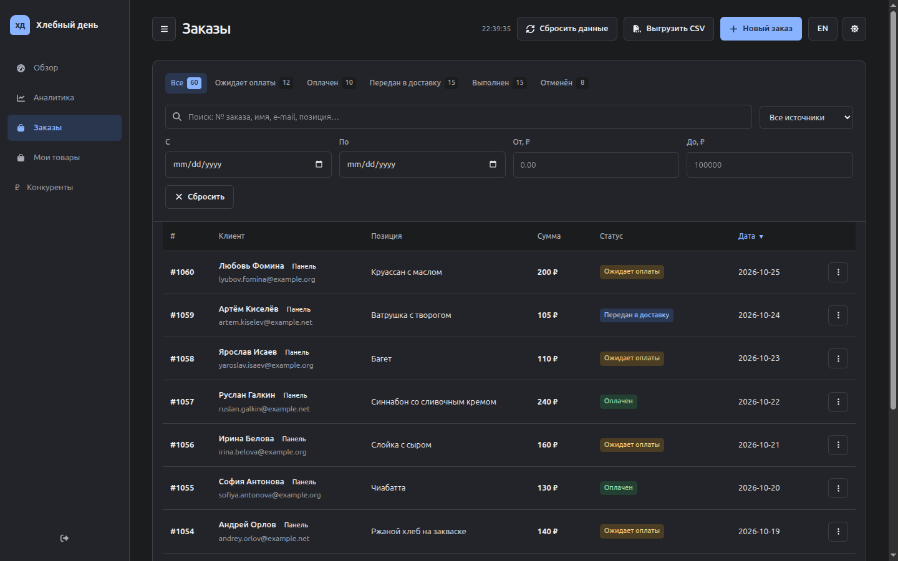
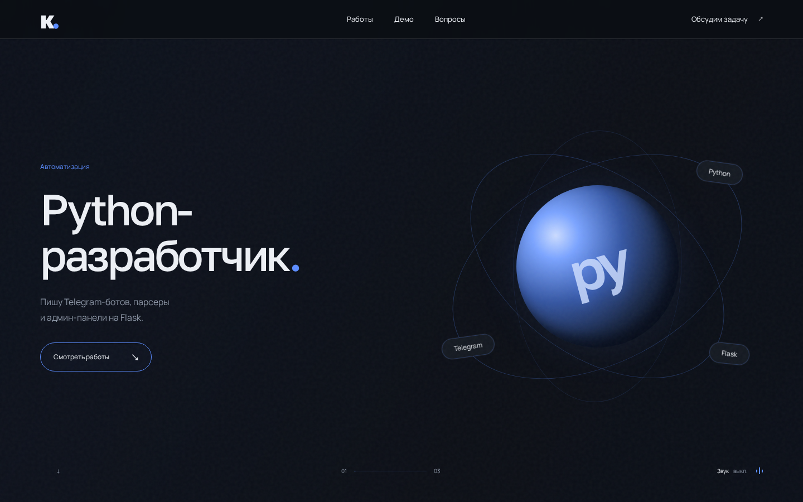

Telegram-боты
Боты для
заявок.
Приём заявок, ответы на вопросы,
уведомления. Внутри Telegram.
Пример диалога
Парсеры и веб-приложения
Меньше
рутины.
Пишу парсеры на Python: собираю данные с сайтов и сохраняю в CSV. Для управления данными делаю панели на Flask.
Обсудить задачуЗаказы в Telegram.
В боте пекарни «Хлебный день» можно оформить заказ. Ниже запись его работы и ссылка на Telegram.
Открыть бота в Telegram ↗ Исходный код бота на GitHub ↗Мои проекты

Веб-приложение / готово
Админ-панель заказов
Панель на Flask: список заказов, фильтры, смена статусов и выгрузка в CSV. Для входа нужен пароль.

Веб-сайт / готово
Этот сайт-визитка
Сделал сайт на HTML, CSS и JavaScript. На первом экране три кадра сменяются при прокрутке. На низких экранах они идут друг за другом.
Вопросы
Коротко о задачах,
процессе и связи.
Какие задачи вы берёте?
Telegram-боты для заявок и уведомлений, сбор и обработку данных, небольшие панели на Flask. Если задача выходит за мой опыт, скажу об этом до начала работы.
Есть ли опыт?
Сделал бота пекарни и панель заказов на Flask. Ссылки на код есть у проектов.
Здесь работает настоящий Telegram-бот?
На странице показана запись работы бота. Чтобы оформить заказ, откройте бота по ссылке в разделе «Демо».
Как проходит работа?
Обсуждаем задачу в Telegram и согласуем объём работы. Я показываю первую версию, вношу согласованные правки и помогаю с запуском.
Что я получу и можно ли будет что-то поменять?
Вы получите код и инструкцию по запуску. Объём правок и помощь после передачи согласуем до начала работы. Новые функции оцениваем отдельно.
Как связаться и когда вы на связи?
Пишите в Telegram: @Miochelic. Время связи: 09:00–21:00 UTC+5. Для созвона договоримся о времени.